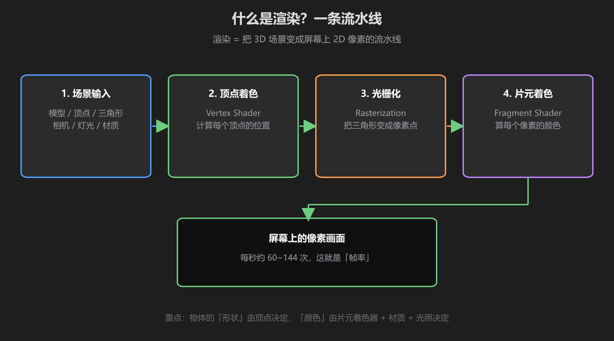
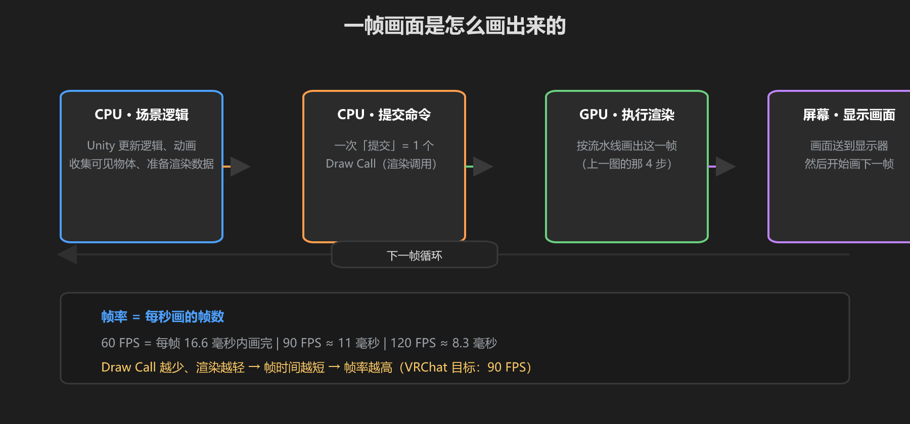

第 1 篇：渲染是什么 — 一帧画面怎么画出来
你在 VRChat 里看到的每一个世界，都是显卡在每秒钟画 60~90 张图的结果。这一篇，我们先搞清楚「一张图是怎么画出来的」。
1. 渲染 = 一条流水线
显卡不是「拍照片」，它是一条流水线：把 3D 场景（模型、灯光、材质）一步步变成屏幕上的 2D 像素。

图：渲染管线 — 场景输入 → 顶点着色 → 光栅化 → 片元着色 → 屏幕
| 阶段 | 在做什么 | 你关心的点 |
|---|---|---|
| 场景输入 | 把模型、相机、灯光、材质交给 GPU | 物体数量、三角形数量 |
| 顶点着色 | 计算每个顶点在屏幕上的位置 | 模型面数、骨骼动画 |
| 光栅化 | 把三角形拆成一个个像素点 | 像素密度（分辨率） |
| 片元着色 | 算每个像素最终的颜色 | 光照、材质、贴图（本教程重点！） |
一句话理解：「形状」由顶点决定，「颜色」由材质 + 光照 + Shader 决定。你做世界时动最多的，就是最后一个环节。
2. 一帧是怎么画出来的
每一帧，CPU 和 GPU 要接力完成一整轮工作：

图：CPU 准备命令 → GPU 执行渲染 → 显示 → 下一帧。帧率 = 每秒画多少帧
- CPU：跑 Unity 逻辑（动画、物理、Udon 脚本），然后决定「这一帧要画哪些物体」，把指令打包提交给 GPU —— 每一次提交叫一个 Draw Call
- GPU：拿着指令跑第 1 节的流水线，把画面画进显存里的帧缓冲
- 屏幕：把帧缓冲显示出来，然后开始下一帧
重点：Draw Call 越少，CPU 越轻松；渲染越简单，GPU 越轻松。两者都会直接变成帧率。第 4 篇会专门讲怎么省。
3. 为什么画面「好看」？
渲染的世界里，「好看」≈「真实的光照」。决定画面质感的三件事，也是后面三篇的主题：
| 要素 | 第几篇讲 | 举例 |
|---|---|---|
| 光照 | 第 2 篇 | 太阳、灯泡、天空的颜色 |
| 材质/Shader | 第 3 篇 | 木头糙、金属亮、水晶会发光 |
| 性能控制 | 第 4 篇 | 别人来你世界不卡顿 |
先记住一个概念：光不打，什么材质都白搭。很多新手把材质调得很漂亮，但场景没打光，看起来还是灰的。
学前检查清单
- 理解了「渲染 = 顶点 + 光栅化 + 着色」的流水线
- 理解了 Draw Call 是什么、为什么越少越好
- 理解了「形状看顶点、颜色看材质和光」